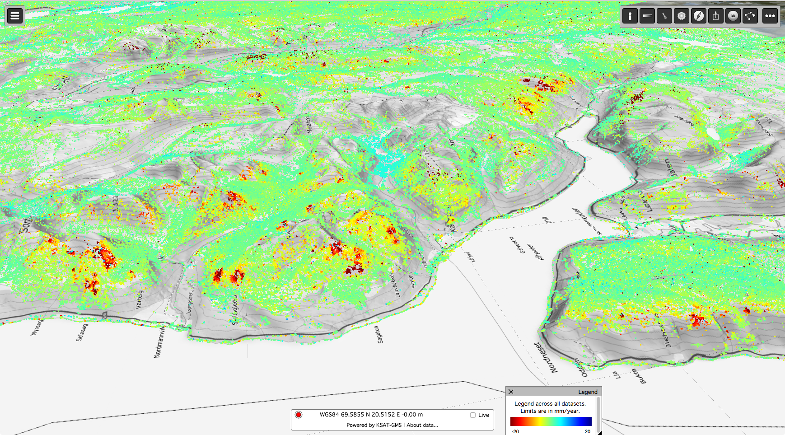
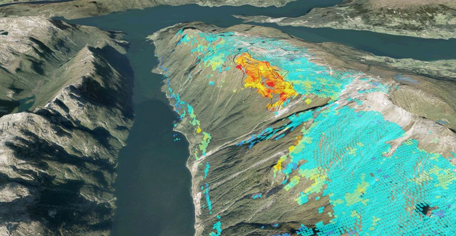
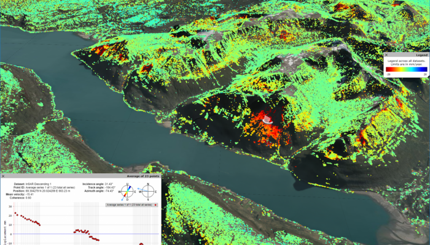

<!doctype html>
<html lang="en">

	<head>

		<meta charset="utf-8">
		<!-- <meta name="viewport" content="width=device-width, initial-scale=1.0, maximum-scale=1.0, user-scalable=no"> -->
		<meta name="apple-mobile-web-app-capable" content="yes" />
		<meta name="apple-mobile-web-app-status-bar-style" content="black-translucent" />
		<meta name="viewport" content="width=device-width, initial-scale=1.0, maximum-scale=1.0, user-scalable=no, minimal-ui">

		<title>Initial Presentation for Landslide prediction and monitoring in the Three Gorges Reservoir Area</title>

		<link rel="stylesheet" href="./dist/reset.css">
		<link rel="stylesheet" href="./dist/reveal.css">
		<link rel="stylesheet" href="./dist/theme/black.css" id="theme">

		<!-- Theme used for syntax highlighted code -->
		<!-- <link rel="stylesheet" href="plugin/highlight/monokai.css" id="highlight-theme"> -->

	</head>

	<body>

		<div class="reveal">
			<div class="slides">
				<section data-markdown data-separator="^---$" data-separator-vertical="^--$">
					<script type="text/template">
												
						<!-- .slide: style="color:black" data-background="orange" -->

						<h1 class="" id="hrb">Landslide prediction and monitoring in the Three Gorges Reservoir Area</h1>

						By:

						<h3 class="" id="hcb">
						Merghadi Abdelaziz
						</h3>

						---

						<!-- .slide: data-background="orange" -->
						<h1 id="hrb">
						Problem</br>Statement
						</h1>

						--

						<h2 id="hr">
						Problem Statement
						</h2>

						<span style="display: block; font-size: smaller;">

						- This research is picking interest in The Three Gorges Reservoir Area (TGRA), which suffers from landslide disasters.

						- Movement and failure of reservoir landslide can result in major economic damage. Displacement prediction has been proven to be the most cost-saving risk reduction measure. However, displacement prediction of reservoir landslide remains a key fundamental challenge.

						- In fact, The TGRA is well known for the variety of landslides that are (to a certain degree) non-mapped due to the unique heterogeneous properties (i.e. geology, geomorphology and so forth, that vary dramatically).

						- This dramatic variance of landslides in the TGRA, in term of the spatial repartition and intensity, became a very serious handicap to the urban, local, social and economic development of the TGRA.

						- Over the years, the ever-increasing rate of landslides, in particular, increasing the number of the element at risk exposed to landslides. As consequence, an increase in the economic burden associated with landslides damages it became a major issue for the local development.

						- Over the year, these burdens trigger a reaction-chain of two separate issues:

						- Stable areas are becoming more expensive for landlord and projects development.

						- Constructions in inadequate terrains and/or soils increase the overall expenses and the project budget by the exposure of such constructions to landslide and land instabilities.

						</span>

						--

						<h2 id="hr">
						Problem Statement
						</h2>

						<span style="display: block; font-size: smaller;">

						<aside class="notes">

						- Although amenable to a large number of applications, many researchers have shown that the establishment of a computer intelligence-based model is inherently stochastic, as identical results would be difficult to reproduce on different occasions.

						- Such characteristics may seriously weaken the reliability of computer intelligence-based models. Moreover, computer intelligence-based deterministic point prediction is of limited value when uncertainties are present.

						</aside>

						- In fact, a complete understanding of this nonlinear dynamic landslide system is lacking, which causes significant uncertainties in landslide displacement prediction.

						- Therefore, significant effort is needed to address these predictive uncertainties associated with computer intelligence outputs, thus building a reliable landslide prediction model. However, only a few studies have been reported on prediction and uncertainty quantification of landslide displacement.

						- For these reasons, landslide monitoring and prediction processes became an absolute necessity that mandate assessing landslides susceptibility in a systematic, fast and evolving ways using models that are capable of anticipating the overall patterns of this phenomena and thus better understanding and evaluating the overall damages and maybe future development projects.

						- Despite the several remedial projects that have been carried out over the years, the effect of landslides in term of damages is still persisting and sometimes even worse.

						- Yet, these remedies tend to ignore:

						- That the reservoir landslide is a complex nonlinear dynamic system, and movement and failure may be induced by combined and periodic effects of heavy rainfall and reservoir fluctuations.

						- The overall landslide patterns behaviors.

						- Recent advancement in computer science and the new innovative state-of-the-art landslide models.

						</span>

						--

						<h2 id="hr">
						Problem Statement
						</h2>

						<span style="display: block; font-size: smaller;">

						- Overall, this research will try to implement ML/AI-based modeling for landslide susceptibility assessment and mapping in GIS compatible environment in TGRA as a case study by relying on Machine learning/AI using state-of-the-art Computer Science models and algorithms instead of well documented and elaborated conventional and traditional approaches for landslide susceptibility.

						- Moreover, it is important to note that this research will focus on the process of modeling and assessing the landslides in the study area, whereas landslide phenomenology, evolution process, triggering mechanism, landslides conditioning and triggering factors  are out of the scope of this analysis because of being well presented and discussed in number of research literatures and investigation campaigns.

						</span>

						---

						<!-- .slide: data-background="orange" -->

						<h1 id="hrb">Objectives</h1>

						<aside class="notes">
						<!-- <span style="display: block; font-size: smaller;"> -->
						The objectives could be structured as follows:
						</aside>

						--

						<h2 id="hr">Objectives #1</h2>

						<span style="display: block; text-align: justify;">

						Address the significant uncertainties and irreproducibilty issues by creating framework that help in obtaining identical results on different occasions. Thus, building a reliable landslide prediction model.

						</span>

						<aside class="notes">

						- Although amenable to a large number of applications, many researchers have shown that the establishment of a computer intelligence-based model is inherently stochastic, as . Moreover, computer intelligence-based deterministic point prediction is of limited value when uncertainties are present.

						- In fact, a complete understanding of this nonlinear dynamic landslide system is lacking, which causes  in landslide displacement prediction.Therefore, significant effort is needed to address these predictive uncertainties associated with computer intelligence outputs, . However, only a few studies have been reported on prediction and uncertainty quantification of landslide displacement.

						</aside>

						--

						<h2 id="hr">Objectives #2</h2>

						<span style="display: block; text-align: justify;">
						The production of a useful landslide susceptibility mapping and assessment frameworks with a reproducible and unbiased optimization process and exploit the possibility of automating the process of landslide susceptibility mapping or landslide mapping by taking advantage from available resources at the local agencies and open source community.
						</span>

						--

						<h2 id="hr">Objectives #3</h2>

						<span style="display: block; text-align: justify;">
						Standardizing the procedure regarding landslide assessment in the study area (i.e. acquisition, scaling, pre-processing, optimization, and evaluation procedures) by preparing custom and reproducible algorithms for specifically the purpose of landslide assessment in the study area using GIS.
						</span>

						--

						<h2 id="hr">Objectives #4</h2>

						<span style="display: block; text-align: justify;">
						Implementing a variety of known models and techniques that rely on statistical modeling approaches, but also experimenting with the state-of-the-art techniques, advanced methods and unprecedented solutions for landslide assessment using GIS.
						</span>

						--

						<h2 id="hr">Objectives #5</h2>

						<span style="display: block; text-align: justify;">
						Evaluating models performance and the results obtained using the most appropriate procedures and methods, in favor of gaining a qualitative and quantitative descriptors evaluations of the model's performance using GIS in combination with statistical tools.
						</span>

						--

						<h2 id="hr">Objectives #6</h2>

						<span style="display: block; text-align: justify;">
						Address the issues of availability, visualization, and publishing of the detailed results in the form of reproducible, reliable, high resolution, generic landslide susceptibility map per each model using GIS, and web-GIS and estimating their applicability for better environmental management and for reducing the victims and damages caused by future landslide occurrences.
						</span>
						<!-- </span> -->

						---

						<!-- .slide: data-background="orange" -->

						<h1 id="hrb">Theoretical</br>Background</h1>

						--

						<h2 id="hl">Landslide prediction and monitoring</h2>

						- Definition
						- Concepts
						- Assumptions
						- Principles
						- Data Acquisition
						- Modeling Approach

						--

						<h2 id="hr">Definition</h2>

						> <span style="display: block; font-size: smaller;">"systematic process of gathering of the available or potential information’s, processing and/or modeling using those information’s and formulate (forming) a judgment about landslides in a transient work-flow".</span>

						--

						<h2 id="hr">Concepts</h2>

						<span style="display: block; text-align: left; font-size: smaller;float:left;width: 40%;">
						The work-flow usually consists of:

						- Initiation (i.e. the definition of the objectives, fundamental details, the scale of the analysis, assessment type and study area).

						- Acquisition (i.e. gathering of the required information, data and background information’s).

						- Analysis and modeling (of landslide susceptibility and hazard).

						- Evaluation.

						- Recommending and advising (i.e. usually optional).

						- Reporting, publishing, and visualizing.

						</span>

						<div><span style="display: block; text-align: right; float: right; width: 40%; ">
						
						</span>


						<aside class="notes">
						Despite the fact the all Landslide susceptibility studies share this common work-flow template, the choice of assessment approach remain different due to the fact that each case study have its unique set of properties that are different from the others such as the aspect of the problematic to be solved that highly influence choices like modeling approach, micro processes and sub-stages of the data acquisition and analysis.
						</aside>

						--

						<h2 id="hr">Assumptions</h2>

						<span style="display: block; text-align: justify; font-size: smaller;">

						- Slope failures do not occur randomly or by chance, but as a result of the conjunction of different conditions, governed by different physical and Geotechnical processes and behaviors.

						- Landslides leave more-or-less distinct footprints (upon activation or after a reasonable period of inactivity) that could be mapped in the field or remotely.
						- Similar landslides may similarly and share common results (i.e. footprints).
						- Implicitly, conditions that are not taken into account in the model do not change systematically in time or space (time-space invariant).

						</span>

						<aside class="notes">
						Moreover, landslide investigations and landslide assessment revolve around several empirical principles and assumptions articulated in the works of (e.g. Chacón et al. (2006) and Guzzetti et al. (2012)) such as:
						</aside>

						--

						<h2 id="hr">Principles</h2>

						<span style="display: block; text-align: justify; font-size: smaller;">

						- The principle of historical recurrence of landslides implies that the landslides share common reoccurring behaviors, patterns, and locations of the one that got activated in the past.

						- The principle of uniformitarianism (past and present are keys for the future) implies that the slope is more likely fails under the same conditions (that resulted instability) that led to slopes failure in the past, the present or even the future, at other, environmentally similar locations.

						- Knowledge on landslides of some area can be generalized and expanded to other areas where similar conditions apply.

						</span>

						--

						<h2 id="hr">Data Acquisition</h2>

						<span style="display: block; text-align: justify; font-size: smaller;">

						1. Conventional methods:

							- Mining and/or investigating of the historical records

							- Field mapping techniques

							- Visual interpretation of aerial

						2. New methods:

							- Instrumental monitoring techniques or Field instrumentation (in-situ)

							- Contemporary Remote Sensing techniques (InSAR)

							- Surveying

						</span>

						--

						<h2 id="hr">Modeling Approach</h2>

						<span style="display: block; text-align: justify; font-size: smaller;">

						- Based on model’s predictability we can separate models into two distinct and different cases:

						- **Predictive models**: are the type of models that are generally based on non-linear supervised classification problems upon spatial and/or temporal references (i.e. spatial and/or temporal conditions) that can be related to past landslide occurrence (and even several generations of past occurrences) within given area to predict future events occurrences and localize endangered susceptible zones.

						- **Non-Predictive models**: this kind of models are very different than predictive models as they tend to spatially analyze the relationships among the different thematic variables and analyze their overall influence and contribution to the landslide susceptibility, hazard or risk by figuring out the relation between the condition factors and the landslide occurrence in statistical manner using various statistical relations and methods.

						</span>

						<aside class="notes">
						</aside>

						--

						<h2 id="hr">Modeling Approach</h2>

						<span style="display: block; text-align: justify; font-size: smaller;">

						One can alternatively discuss the modeling choice and briefly the problems that come with it by accommodating a more conventional perspective. For example, based on the method of treating and handling the landslide assessment, we can denote:

						- **Direct methods** are the expert-opinion-driven approach that relies on expert evaluation of the direct relationship between conditioning factors and landslides occurrences during a survey campaign on the site of failure.

						- **Indirect methods** rely on mapping and analyzing a different set of conditioning factors and their relative contribution to the occurrence of slopes failure resulting in a relationship between the landslide condition factors and landslides occurrences.

						</span>

						<aside class="notes">
						In reality, is a combination of both methods is made in order to determine the conditions under slopes failures occur. However, the most usual classification of the methodological model approaches (Table ‎2.9) is the following:
						</aside>

						--

						<h2 id="hr">Modeling Approach</h2>

						1. **Heuristic or Expert-driven approach**

						2. **Physically-based or Deterministic approach**

						3. **Statistical/Machine Learning approach**

						--

						<h2 id="hr">Heuristic or Expert-driven approach</h2>

						><span style="display: block; text-align: justify; font-size: smaller;">is an expert’s opinion-driven approach of weighting conditioning factors that relate to a landslide inventory in order to determine landslide zonation. The weighting process is achieved through hierarchical leveling process of the landslide conditioning factors.</span>
						--

						<h2 id="hr">Physically-based or Deterministic approach</h2>

						><span style="display: block; text-align: justify; font-size: smaller;">highly focus on quantitatively generating an index called “stability index” by calculating the “safety factors”. This involves some complicated evaluation of safety factor that required detailed measurement of a handful of parameter’s that influence slopes.</span>
						--

						<h2 id="hr">Statistical and Machine Learning approach</h2>

						<span style="display: block; text-align: justify; font-size: smaller;">

						- statistical approach in particular is able to extracts and obtain a relationship that relates landslide occurrence to the conditioning factors very efficiently for large scale analysis.

						- depending on data availability it may relate the values, distributions, aggregations and other data features, which introduce an objective prognostic dimension to the implemented model.

						- if an advanced methods such as Machine Learning (ML) is implemented which, can introduce more depth to statistical approach by incorporates a broad range of complex learning procedures that are effective in solving problems of landslides such as susceptibility assessment.

						- This modeling capability can be highlighted in three main areas:

						- The system’s deterministic model is computationally expensive and ML can be used as a code accelerator tool.

						- There is no deterministic model but an empirical ML-based model can be derived using the existing data.

						- Classification problems.

						</span>

						<aside class="notes">
						Statistical approach, Methods and models based on this approach are based on the assumption, which require, collecting and preparing an accurate database, i.e. a geospatial database consist of an inventory map of past and present landslide occurrences and set and/or combination of conditioning factors, with maximum details available. Then, models based on these methods are trained and validated using that database and the resulting models are used to generate landslide occurrence probabilities in order to forecast the future landslide’s areas using past and present landslide occurrences.
						<aside>

						--

						<h3 id="hr">Summary of the available landslide assessment modeling approaches</h3>

						<span style="display: block; text-align: justify; font-size: smaller;">

						|Modeling approach |Description Summary |
						|:--:|:--:|
						|*Heuristic or expert-driven*| Use thematic data (variables such as geological, geomorphological, Land use, infrastructure and so forth) and suffer from uncertainty related to the subjectivity of the practitioner in both, data preparation and modeling itself rending the approach more of “opinion-oriented” method.|
						|*Statistical*| Can suffer from uncertainty due to the data preparation, but the tendency of using advanced techniques, such as Machine Learning algorithms, might be helpful due to their capability of canceling-out these sources of uncertainty.|
						|*Physically-based or Deterministic*| Regard only the simplest mechanisms and introduce numerous assumptions into the modeling (Montgomery and Dietrich, 1994), thus their uncertainty is relatively high. In regional scales implement such approach is not feasible.|
						</span>

						<aside class="notes">
						In respect to the preceding passages, only heuristic approach methods can be qualified as a direct method (it can be an indirect method but to a limited extent). On the other hand, only **statistical approach** methods can be qualified as a **predictive approach**, but could also be enlisted among **non-predictive**, while the **remaining three** only qualify as **non-predictive** approaches. Only statistical approach based methods seems to be a viable option to use, especially the more advanced (predictive) models such as ML turn out to be the most promising and least limited for the exploration because physical-based models are capable of delivering the highest prediction accuracy require a fair amount of detailed data information’s to provide reliable results, which is unbelievably expensive and heuristic or expert-driven approach is limited and very controversial as it requires expert-opinion, which make the model unreliable due to uncertainties and subjectiveness.
						</aside>

						---

						<!-- .slide: data-background="orange" -->

						<h1 id="hrb">Research</br>Workflow</h1>

						--

						<h2 id="hr">Overall Research Workflow</h2>

						<!-- <span style="display: block; text-align: left; float: left; width: 100%; "> -->

						<span class="fragment fade-in-then-semi-out"></span>
						<span class="fragment fade-in-then-semi-out"></span>
						<span class="fragment fade-in-then-semi-out"></span>
						<span class="fragment fade-in-then-semi-out"></span>
						<span class="fragment fade-in-then-semi-out"></span>
						<span class="fragment fade-in-then-semi-out"></span>
						<span class="fragment fade-in-then-semi-out"></span>

						<span data-animate data-src="./img/Workflow1.svg" style="display: block; text-align: center; float: left; width: 100%; ">
						<!--
						{
						"setup": [
						{
						"element": "#paths_text", 
						"modifier": "attr",
						"parameters": [ { "class": "fragment fade-in-then-semi-out", "data-fragment-index": "0" } ]
						},
						{
						"element": "#database", 
						"modifier": "attr",
						"parameters": [ { "class": "fragment fade-in-then-semi-out", "data-fragment-index": "1" } ]
						},
						{
						"element": "#vif", 
						"modifier": "attr",
						"parameters": [ { "class": "fragment fade-in-then-semi-out", "data-fragment-index": "2" } ]
						},
						{
						"element": "#cv", 
						"modifier": "attr",
						"parameters": [ { "class": "fragment fade-in-then-semi-out", "data-fragment-index": "3" } ]
						},
						{
						"element": "#train", 
						"modifier": "attr",
						"parameters": [ { "class": "fragment fade-in-then-semi-out", "data-fragment-index": "4" } ]
						},
						{
						"element": "#test", 
						"modifier": "attr",
						"parameters": [ { "class": "fragment fade-in-then-semi-out", "data-fragment-index": "5" } ]
						},
						{
						"element": "#predict", 
						"modifier": "attr",
						"parameters": [ { "class": "fragment fade-in-then-semi-out", "data-fragment-index": "6" } ]
						}
						]
						}
						-->

						</span>

						<!-- </span> -->

						<!--
						<button onclick="RevealAnimate.play();this.blur();return false;">Play</button>
						<button onclick="RevealAnimate.pause();this.blur();return false;">Pause</button>
						<button onclick="RevealAnimate.seek(500);this.blur();return false;">Seek 500</button>
						-->

						--

						<h2 id="hr">Overall Research Workflow</h2>

						<span style="display:block; text-align: justify; font-size: smaller; ">

						- [Construct a spatial database]()

						- [Analyzing and optimizing landslide conditioning factor based on Factors analyses results]()

						- [Model configuration and implementation using the appropriate model hyperparameters optimization strategy]()

						- [Model training, validation, and comparison using the appropriate performance indicator metrics]()

						- [Landslide susceptibility maps generation, assessment, and evaluation based on the appropriate assessment-evaluation strategy]()

						</span>

						--

						<h2 id="hl">Models Implementation and Configuration</h2>

						- Implemented Models

						- Models Optimization

						--

						<h2 id="hl">Implemented Models</h2>

						- [Deep Learning Models]()
						- [Tree-Based Models]() 
						- [Kernel-Based Models]() 
						- [Unsuperived Models]()

						--

						<h2 id="hr">Models Optimization</h2>

						- In rare cases, hand-tuning models hyperparameters are enough but in general, there exist methods to do such a task; i.e., Grid search, Random search, Gradient-Based Optimization.

						- However, those methods are widely used and still considered as the main option due to the simplicity and ease of their implementation.

						- Yet, they produce very poor results that lead to:

							1. costly evaluations (especially when the computational budget is limited.

							2. incorrect assessments about the implemented models, whether they are genuinely bad or simply badly tuned.

						--

						<h2 id="hr">Models Optimization</h2>

						- To avoid the aforementioned problems, we consider a state-of-art technique such SMBO, PSO, GW...etc.

						- This techniques can efficiently optimize models by working on a strictly reduced budget for function evaluations and hyperparameters optimization of expensive black-box models.

						- Generally, better results can be achieved using this techniques in fewer experiments compared to traditional techniques (Grid search, Random search) due to:

							1. the ability to reason about the quality of experiments before they are run.

							2. benefiting from the “adaptive capping” to avoid long runs.

						---

						<!-- .slide: data-background="orange" -->

						<h1 id="hrb">Expected</br>Results</h1>

						--

						<h2 id="hr">Expected Results</h2>

						<!-- <span style="display:block; width: auto;  height: 1080px; ">
						
						</span> -->

						<span style="display: block; text-align: right; float: right; width: 50%; ">
						
						</span>

						<span style="display: block; text-align: right; float: left; width: 50%; ">
						
						</span>

						--

						<h2 id="hr">Expected Results</h2>

						<!-- <span style="display:block; width: auto;  height: 1080px; ">
						
						</span> -->

						<span style="display: block; text-align: center; float: center; width: 100%; height: 100%; ">
						
						</span>

						<!-- <span style="display: block; text-align: right; float: left; width: 50%; ">
						
						</span> -->

						---

						<!-- .slide: data-background="orange" -->

						<h1 id="hrb">Thank you</h1>

						--

						<h2 id="hr">Potential questions and details</h2>


					</script>
				</section>
			</div>
		</div>


		<style>
			#hrb {
				color:black;
				text-align:right
				}
			#hr {
			text-align:right
			}
			#hcb {
			color:black;
			text-align:center
			}
			#hlb {
			color:black;
			text-align:left
			}
			#hl {
			text-align:left
			}
		</style>

		<script src="./dist/reveal.js"></script>
		<script src="./plugin/markdown/markdown.js"></script>
		<script src="./plugin/highlight/highlight.js"></script>
		<script src="./plugin/notes/notes.js"></script>
		<script src="./plugin/math/math.js"></script>
		<script src="./plugin/zoom/zoom.js"></script>

		<script src="./plugin/chalkboard/plugin.js"></script>
		<script src="./plugin/anything/plugin.js"></script>

		<script src="./plugin/chart/Chart.min.js"></script>
		<script src="./plugin/chart/plugin.js"></script>

		<script src="./plugin/animate/svg.min.js"></script>
		<script src="./plugin/animate/plugin.js"></script>

		<script src="lib/deflate.js"></script>

		<script>

			Reveal.initialize({
				controls: true,
				progress: true,
				history: true,
				center: true,
				height: 1080,
				width: 1920,
				// zoomKey: "alt",
				// Factor of the display size that should remain empty around
  				// the content
  				// margin: 0.04,
				// Bounds for smallest/largest possible scale to apply to content
				// minScale: 0.2,
				// maxScale: 2.0,
				controls: true,
				progress: true,
				history: true,
				center: true,
				mouseWheel: true,
				previewLinks: false,
				dependencies: [
					{ src: 'plugin/plantuml.js', async: true }
					],
				plugins: [ RevealMarkdown, RevealHighlight, RevealMath, RevealNotes, RevealZoom, RevealChalkboard, RevealAnything, RevealChart, RevealAnimate]
				// plugins: [ RevealMarkdown, RevealHighlight, RevealNotes ]
			});

		</script>

	</body>
</html>
